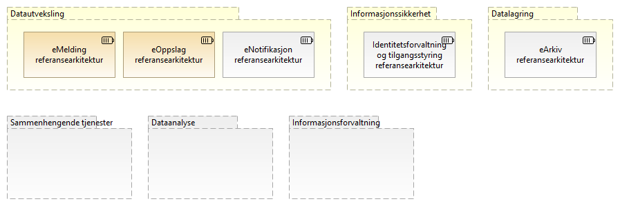
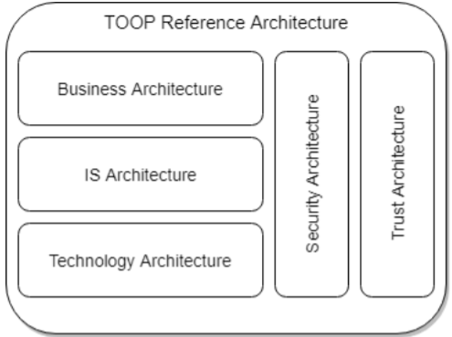
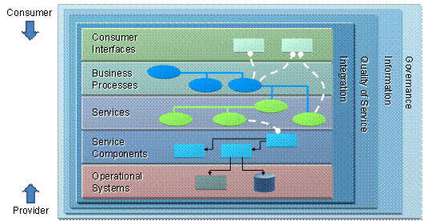
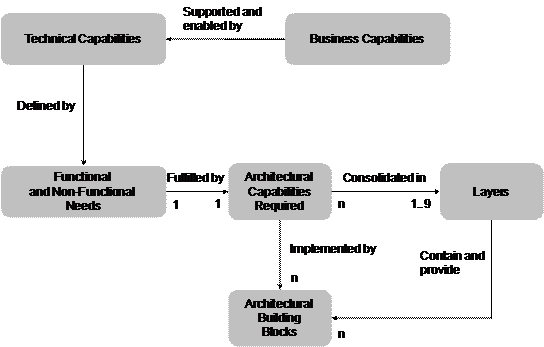
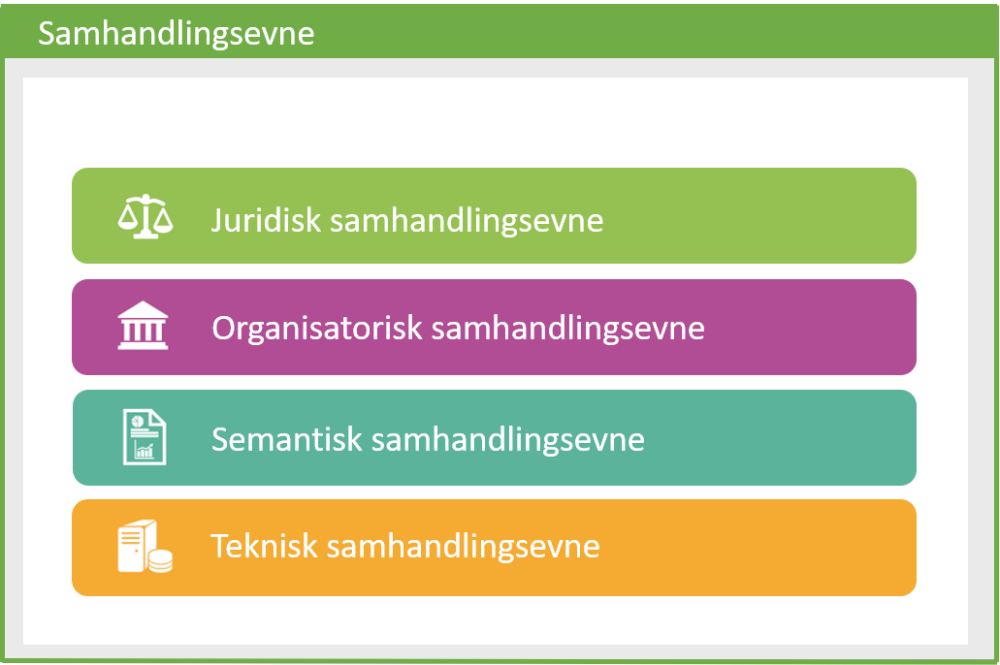

Arbeid med prioriterte nasjonale referansearkitekturer er et pågående samarbeid mellom Difi og flere andre virksomheter innen offentlig og privat sektor.
1. Om referansearkitekturer
1.1. Hva er referansearkitekturer?
Referansearkitekturer gir mønstre og veiledning til utforming av arkitekturer og løsninger innen avgrensede områder.
Det legges vekt på å få fram nyttig veiledning, med alt fra gode eksempler til beste praksis og konkrete anbefalinger.
Prioritering av arbeidet og utarbeidelsen av referansearkitekturer gjøres i samarbeid med aktører på tvers av offentlig og privat sektor nasjonalt og internasjonalt.
Relatert informasjon:
1.2. Om nasjonale referansearkitekturer
Nasjonale referansearkitekturer identifiseres ut fra en nedbrytning av nasjonal arkitektur i temaområder og kapabiliteter i arkitekturlandskapet. Både kapabilitetskart og prioriterte referansearkitekurer innen hvert område vil utvikles over tid, etterhvert som en går inn på nye områder.
Følgende figur viser en foreløpig oversikt over aktuelle referansearkitekturer innen respektive områder.
 Denne oversikten er i arbeid (vår 2019)
Denne oversikten er i arbeid (vår 2019)

2. Referansearkitekturer for Datautveksling
Unresolved directive in book-nasjonale-referansearkitekturer – Kopi.adoc - include::../nab_referanse_arkitekturer/generisk_datautveksling.adoc[]
2.4. Introduksjon til tverrgående temaer
2.4.12. Semantikk
Tverrgående temaer innen datautveksling
Unresolved directive in book-nasjonale-referansearkitekturer – Kopi.adoc - include::../nab_referanse_arkitekturer_tverrgående_tema/book-tverrgående-tema.adoc[]
3. Spesifikke referansearkitekturer
3.1. eOppslag
Beskrivelsen under viser hvordan den generelle arkitekturen for eOppslag kan realiseres med løsningskomponentene Maskinporten, API-katalogen og Altinn-autorisasjon. Disse fellesløsningene leverer de tjenestene som er beskrevet på forretningsnivå over.
eOppslag kan benyttes både for sikrede API-er og API-er som tilbyr åpent tilgjengelige data uten tilgangsbegrensninger.
Det er ikke hensikten å låse referansearkitekturen til spesifikke løsninger, da ulike sektorer og aktører kan ha behov som ikke passer med det som er beskrevet. For synkrone tjenestekall basert på REST og med tilgangsstyring ved hjelp av OAUTH2-tokens, vil det være god støtte i å benytte de foreslåtte løsningene.
Nederst i beskrivelsen av løsningsmønstre er det en overordnet beskrivelse av hvilke data som inngår i registrering i de ulike komponentene.
3.1.1. Klargjøring for deling av data på forespørsel
Tilgjengeliggjøre data
For å tilby data gjennom et API sikret med fellestjenester må tilbyder inngå avtale for bruk av Maskinporten og Felles API-katalog. De respektive API-ene og hvem som skal ha hvilke rettighetene til disse må så registreres i løsningene.

| Element | Beskrivelse |
|---|---|
Datatilbyder |
Tilbyder av data til andre aktører. |
Tilgjengeliggjøre data |
Evnen til å gjøre data tilgjengelig for aktører utenfor egen virksomhet. |
Tilgjengeliggjøre API |
Prosessen med å tilby data gjennom et API til aktører utenfor egen virksomhet. |
Registrere API |
Prosess med å registere API i relevante tjenester, api-katalog, Maskinporten, Kapabilitetsoversikt |
Inngå avtale om tilgang til data |
Prosess for å inngå avtale om tilgang og bruk av data. |
Tildele tilganger til API |
Prosess for å registrere hvilke databrukere som skal få tilgang Sette policy, og grov tilgangsstyring gjennom maskinporten. |
Registrere brukere av samtykke |
Prosess for å registrere konsumenter som skal ha mulighet for å innhente samtykker som gir tilgang til en tjeneste. Dette utføres kun om det er behov for samtykke for tilgang til dataene. |
Registrere Open API specification¨ |
Tjeneste i Felles API-katalogen for å registrere API. Bruk av tjenesten forutsetter at rettigheter til å gjøre dette på vegne av tilbyders virksomhet. |
Selvbetjeningstjeneste for administrasjon av integrasjoner og APIer |
Tjeneste "administrasjonssentre" vil ha rettigheter til å registrere på vegne av andre f.eks. API-katalogen |
Registrering av API-brukere |
Tjeneste for gjennom selvbetjening å registrere og vedlikeholde tilgangene konsumenter skal ha til API-er og scopes. |
Registrere samtykkebasert tilgang |
Tjeneste for å registerer konsumenter som kan innhente samtykke som gir grunnlag for utlevering fra datatilbyder. |
Beskrivelse API |
Dataobjekt som er en maskinlesbar beskrivelse av REST API-er iht. Open API Specification. Dette er formatet som benyttes for å registrere et API i felles API-katalog |
Token-egenskaper |
Egenskaper som f.eks. gyldighetstid ved tilgangstoken som er Maskinportens variant av sikkerhetsbillett. |
OAUTH scopes |
Dataobjekt som som kan beskrives som en ressurs-definisjon, og et token er som regel knyttet til ett eller flere scopes. Scopes benyttes til å styre tilganger til API-er og operasjoner, samt eventuelt hva slags responser man får fra API-er. |
Tilganger konsument |
Oversikt over hvilke API og OAUTH-scopes en virksomhet (representert ved organisasjonsnummer) skal ha tilgang til (utstedt token for). |
Aktører som kan innhente samtykke for bruk av API |
Oversikt over aktører som skal ha mulighet til å innhente samtykke som grunnlag for å få tilgang til data gjennom et API. URL til konsumenten det kan innhentes samtykke for må inngå i beskrivelsen. |
Felles API-katalog |
Del av Felles datakatalog som gir mulighet for å søke etter API-er og lese API-spesifikasjoner https://fellesdatakatalog.brreg.no/apis |
Maskinporten |
Maskinporten er en løsning for tilgangsstyring for virksomheter som utveksler data. Løsningen garanterer identiteten mellom virksomheter, og sørger for maskin-til-maskin autentisering |
Altinn autorisasjon |
Autorisasjonskomponenten i Altinn som gir muligheter til å delegere rettigheter til andre organisasjoner eller personer. Rettigheter til bruk av autorisasjonskomponenten baserer seg på registrerte roller i Enhetsregisteret. Altinn autorisasjon leverer også tjenester for å registrere og kontrollere samtykke gitt av person eller virksomhet. |
Få tilgang til data
For å få tilgang til data gjennom et API sikret ved hjelp av nasjonale fellesløsninger, må konsumenten inngå avtale for bruk av Maskinporten og registrere den tekniske klienten som skal benytte løsningen.

| Element | Beskrivelse |
|---|---|
Datakonsument |
Den som innhenter eller mottar data fra andre aktører. |
Få tilgang til data (konsument) |
Evnen til å skaffe seg tilgang til tilbudte data fra annen aktør. |
Få tilgang til API |
Prosessen med å skaffe seg tilgang til tilbudte data fra annen aktør. Omfatte å finne API-er, inngå nødvendige avtaler og få tilganger. |
Finn/få kjennskap til API |
Prosessen med å finne eller få kjennskap til tilgjengelige API-er gjennom relevante kataloger og søkeløsninger. |
Inngå avtale om tilgang til data |
Prosess for å inngå avtale om tilgang og bruk av data. |
Registrer klient med tildelt tilgang |
Prosess for konsument å registerere (provisjonering av) den klienten som skal ha tilgang til API-et ved bruk av sikkerhetsbillett. Dette forutsetter at konsumenten har avtale om bruk av sikkerhetsbillettjenesten og at tilbyder har gitt konsumenten tilgang. Dersom det er en leverandør som har blitt delegert rettigheter som databehandler på vegne av konsument er det leverandøren som registrer sin klient. |
API-søk |
Tjeneste for å søke etter og finne tilgjengelige API-er |
Registreringstjeneste for API-brukere |
Tjeneste for å registrere klienter som skal ha tilgang til et gitt API. |
Beskrivelse API |
Dataobjekt som er en maskinlesbar beskrivelse av REST API-er iht. Open API Specification. Dette er formatet som benyttes for å registrere et API i felles API-katalog |
Felles API-katalog |
Del av Felles datakatalog som gir mulighet for å søke etter API-er og lese API-spesifikasjoner https://fellesdatakatalog.brreg.no/apis |
Maskinporten |
Maskinporten er en løsning for tilgangsstyring for virksomheter som utveksler data. Løsningen garanterer identiteten mellom virksomheter, og sørger for maskin-til-maskin autentisering |
Delegering av rettigheter til databehandler
Dersom konsumenten benytter en leverandør som skal opptre på konsumentens vegne, må dette forholdet registereres gjennom Altinn autorisasjon slik at det blir tilgjengelig for Maskinporten å kontrollere representasjonsforholdet.

| Element | Beskrivelse |
|---|---|
Samhandlingsaktør |
Samlebetegnelse på roller som inngår i en samhandlingsprosess og samhandler med en annen samhandlingsaktør. Kan være en tilbyder, konsument, avsender, mottaker, leverandør etc. |
Delegere rettigheter til databehandler |
Evnen til å delegere rettigheter til databehandler som utfører oppgaver på vegne av behandlingsansvarlig. |
Delegering av rettigheter til databehandler (leverandør) |
Prosessen med å delegere rettigheter til databehandler/leverandør. |
Inngå avtale med leverandør |
Prosessen med å inngå en avtale med leverandør. En slik avtale vil normalt være inngått tidligere og uavhengig av om man skal ta i bruk et nytt API. En tjenesteavtale med leverandør er en forutsetning forutsetning for å kunne delegere en tilgang. |
Registrere delegert tilgang |
Prosessen med å delegere tilganger. I tilknytning til eOppslag vil formålet være å gi leverandør tilgang til å representere konsument overfor et API, men registreringen vil potensielt også kunne gjelde for andre områder. |
Delegerbar ressurs |
Dataobjekt som beskriver en ressurs, f.eks. et API, som det kan gis rettigheter til gjennom et representasjonsforhold. |
Registering av representasjonsforhold |
Tjeneste for å registrere et representasjonsforhold som gir leverandør mulighet til å opptre på vegne av konsument |
Altinn autorisasjon |
Autorisasjonskomponenten i Altinn som gir muligheter til å delegere rettigheter til andre organisasjoner eller personer. Rettigheter til bruk av autorisasjonskomponenten baserer seg på registrerte roller i Enhetsregisteret. Altinn autorisasjon leverer også tjenester for å registrere og kontrollere samtykke gitt av person eller virksomhet. |
Informasjon som inngår i klargjøring av forespørsel
Figuren under viser hvilken informasjons som må registreres i de ulike komponentene som del av klargjøringen for å forespørre data fra et API.

| Element | Beskrivelse |
|---|---|
API-katalogen |
API-katalogen er en del av Felles datakatalog som inneholder API-beskrivelser med endepunktsadresser og kobling til datasett. |
Beskrivelse API |
Dataobjekt som er en maskinlesbar beskrivelse av REST API-er iht. Open API Specification. Dette er formatet som benyttes for å registrere et API i felles API-katalog |
Endepunkt (adresse) |
Dataobjekt som representerer teknisk adresse til et API eller ressurs. |
Altinn autorisasjon |
Autorisasjonskomponenten i Altinn som gir muligheter til å delegere rettigheter til andre organisasjoner eller personer. Rettigheter til bruk av autorisasjonskomponenten baserer seg på registrerte roller i Enhetsregisteret. Altinn autorisasjon leverer også tjenester for å registrere og kontrollere samtykke gitt av person eller virksomhet. |
Delegerbar ressurs |
Dataobjekt som beskriver en ressurs, f.eks. et API, som det kan gis rettigheter til gjennom et representasjonsforhold. |
Beskrivelse av aktør som kan innhente samtykke |
Dataobjekt som beskriver en datakonsument som har rett til å innhente samtykke om å slå opp data. Viktig innholde er bl.a. URL |
Tilganger konsument/representasjonsforhold |
Dataobjekt som beskriver hvilke tilganger til ressurser en representant (leverandør) skal ha på vegne av konsument. |
Maskinporten |
Maskinporten er en løsning for tilgangsstyring for virksomheter som utveksler data. Løsningen garanterer identiteten mellom virksomheter, og sørger for maskin-til-maskin autentisering |
OAUTH scopes |
Dataobjekt som som kan beskrives som en ressurs-definisjon, og et token er som regel knyttet til ett eller flere scopes. Scopes benyttes til å styre tilganger til API-er og operasjoner, samt eventuelt hva slags responser man får fra API-er. |
3.1.2. Utveksling av data
Innhente data
Når en konsumet skal slå opp data gjennom et API benyttes Maskinporten for å få utstedt en sikkerhetsbillett som legges ved tjenestekallet til tilbyders API. Maskinporten utsteder sikkerhetsbilletter som OAUTH2-tokens.

| Element | Beskrivelse |
|---|---|
Datakonsument |
Den som innhenter eller mottar data fra andre aktører. |
Innhente data |
Evnen til å innhente data fra en annen aktør. |
Slå opp data gjennom et API |
Prosessen med lå opp og hente data gjennom et API. |
Innhent samtykke ved behov |
Prosess for å innhente samtykke fra person eller virksomhet som grunnlag for å innhente data. Dette gjøres kun ved behov. |
Hent teknisk endepunkt ved behov |
Prosessen å slå opp den tekniske adressen til et API før spørring mot API-et. Gjøres kun dersom det er nødvendig. |
Be om tilgangstoken |
Prosessen med å benytte en sikkerhetsbillettjeneste for hente en sikkerhetsbillett som gir tilgang til et API. Dette forutsetter at alt er registert og satt opp riktig mot de aktuelle tjenestene. |
Utfør tjenestekall |
Prosessen med å benytte (gjøre et oppslag mot) et eksternt API. |
Samtykkeregistererings-tjeneste |
Tjeneste for å innhente samtykke fra den registrert som dataene gjelder. Dette kan være en person eller en virksomhet. |
Adressetjeneste |
Tjeneste som gir mulighet til å slå opp teknisk endepunkt |
Tokentjeneste |
Tjeneste som utsteder sikkerhetsbilletter. Sikkerhetsbillett utstedes basert på tildelte rettigheter og eventuelle representasjonsforhold. |
Oppslag representasjonsforhold |
Tjeneste som benyttes av tokentjenesten for å kontrollere om det foreligger et delegert representasjonsforhold fra konsument til leverendør i autorisasjonstjenesten til Altinn. |
Datautvekslingstjeneste |
Tjeneste for utveksling av data. Samme som data exchange service. Benyttes av avsender og mottaker for transport av meldinger. |
Endepunkt (adresse) |
Teknisk adresse til et API eller ressurs |
Virksomhetssertifikat |
En virksomhets elektroniske ID. Benyttes for å autentisere virksomheten overfor tokentjenesten. |
Tilganger konsument |
Oversikt over hvilke API og OAUTH-scopes en virksomhet (representert ved organisasjonsnummer) skal ha tilgang til (utstedt token for). |
Altinn autorisasjon |
Autorisasjonskomponenten i Altinn som gir muligheter til å delegere rettigheter til andre organisasjoner eller personer. Rettigheter til bruk av autorisasjonskomponenten baserer seg på registrerte roller i Enhetsregisteret. Altinn autorisasjon leverer også tjenester for å registrere og kontrollere samtykke gitt av person eller virksomhet. |
Felles API-katalog |
Del av Felles datakatalog som gir mulighet for å søke etter API-er og lese API-spesifikasjoner https://fellesdatakatalog.brreg.no/apis |
Maskinporten |
Fellesløsning for API-sikring ved bruk av OAUTH2-tokens. |
Altinn autorisasjon |
Autorisasjonskomponenten i Altinn som gir muligheter til å delegere rettigheter til andre organisasjoner eller personer. Rettigheter til bruk av autorisasjonskomponenten baserer seg på registrerte roller i Enhetsregisteret. Altinn autorisasjon leverer også tjenester for å registrere og kontrollere samtykke gitt av person eller virksomhet. |
Avgi data
Når tilbyder får en forspørsel om data som et API-kall og det ligger ved en sikkerhetsbillett benyttes valideringstjenesten til maskinporten for grov tilgangskontroll.

| Element | Beskrivelse |
|---|---|
Datatilbyder |
Tilbyder av data til andre aktører. |
Avgi data |
Evne til å avgi data på forespørsel. Kan omfatte tilgangsstyring. |
Avgi forespurte data gjennom API |
Prosessen med å avgi data på forespørsel gjennom et egnet API. |
Motta forespørsel om oppslag |
Motta forespørsler fra API-konsument om å avgi data. |
Autentisere konsument |
Prosessen med å autentisere en kosnument. |
Kontroller tilgang |
Kontroll og håndheving av konsumentens rettigheter til å få forespurte data. I tillegg til "validering av sikkerhetsbillet", kan det være behov for kontroll mot virksomhetsinterne policies. |
Avgi data |
Prosessen med å gi svar på forespørselen. |
Datautvekslingstjeneste |
Tjeneste for utveksling av data. Samme som data exchange service. Benyttes av avsender og mottaker for transport av meldinger. |
Tokenvalideringstjeneste |
Tjeneste som benyttes av tilbyder for å validere og kontrollere autentisiteten til et OAUTH2 token fra Maskinporten |
Tilgangskontrolltjeneste |
Tjeneste for å sjekke rettigheter til data. Kan være eksterne eller interne tjenester. Eksempler på rettigheter kan komme av samtykker fra person eller virksomhet, eller rollebasert fra vergemål, familierelasjon el. |
Datautvekslingstjeneste |
Tjeneste for utveksling av data. Samme som data exchange service. Benyttes av avsender og mottaker for transport av meldinger. |
Maskinporten |
Maskinporten er en løsning for tilgangsstyring for virksomheter som utveksler data. Løsningen garanterer identiteten mellom virksomheter, og sørger for maskin-til-maskin autentisering |
Altinn autorisasjon |
Autorisasjonskomponenten i Altinn som gir muligheter til å delegere rettigheter til andre organisasjoner eller personer. Rettigheter til bruk av autorisasjonskomponenten baserer seg på registrerte roller i Enhetsregisteret. Altinn autorisasjon leverer også tjenester for å registrere og kontrollere samtykke gitt av person eller virksomhet. |
Egen autorisasjonskomponent |
Komponent for å håndheve virksomhetens regler for tilgang. Også kalt policy enforcement point (PEP). |
3.2. eMelding
eMelding er en referansearkitektur for meldingsutveksling på tvers av virksomheter, sektorer og landegrenser.
3.2.1. Introduksjon
eMelding kan ses på som en "beste praksis" for meldingsutveksling på tvers av virksomheter og sektorer i offentlig sektor, samt mellom offentlig sektor og privat sektor.
Referansearkitekturen tar utgangspunkt i den europeiske "byggeklossen" CEF eDelivery. CEF eDelivery spesifiserer arkitekturer og standarder for meldingsutveksling. Det finnes flere eksisterende anvendelser og gjenbrukbare løsninger for å realisere eDelivery i ulike land og virksomheter.
eMelding anvendes bl.a. innen PEPPOL-nettverket, nærmere bestemt i regi av OpenPEPPOL.
| OpenPEPPOL is a non-profit international association under Belgian law (Association Internationale Sans But Lucratif – AISBL) and consists of both public sector and private members. The association has assumed full responsibility for the development and maintenance of the PEPPOL specifications, building blocks and its services and implementation across Europe. |
eMelding som referansearkitektur rendyrker konseptene og har en klar kopling til CEF eDelivery, men beskrives i utgangspunktet frikoplet fra CEF eDelivery. Med dette som utgangspunkt, angis så aktuelle løsninger og praktiske anvendelser i form av CEF eDelivery og PEPPOL/OpenPEPPOL.
eMelding som referansearkitektur er avgrenset til asynkron meldingsutveksling innenfor et fellesskap (community) som samhandler under et felles interoperabilitetsregime. Når man er del av fellesskapet vil man kunne sende meldinger til andre parter i fellesskapet uten å måtte inngå bilaterale avtaler om dette. Hver enkelt part registrerer sine samhandlingskapabiliteter i felles registre, for andre til å oppdage.
| eMelding som referansearkitektur støtter mønstre for request-reply og korrelering av meldinger i prosessinstanser, tilsvarende slik dette legges opp til i spesifikasjonen av metadata i meldingsprofil for CEF eDelivery. |
3.2.2. Grunnleggende konsepter for eMelding
Firehjørnersmodellen
Generelt
Begrepet "firehjørnersmodell", eller “4-corner model”, stammer fra CEF eDelivery.
Følgende figur illustrerer aktuelle konsepter:

| Denne modellen kan minne om en "tjenestebuss" (ESB), der det også finnes tilsvarende løs kopling mellom avsender og mottaker. Den grunnleggende forskjellen er at dette mønsteret er fullstendig distribuert og skalerer "uendelig" over www på global basis. |
I firehjørnersmodellen kommuniserer avsenders og mottakers systemer via hver sine aksesspunktløsninger. Aksesspunktene konverterer mellom applikasjonsspesifikke protokoller og en standardisert, sikker meldingsprotokoll over aktuell kommunikasosjonsinfrastruktur.
Hvert aksesspunkt blir en node i et tillitsfelleskap.
Aksesspunktene kan eventuelt integreres i avsenders og mottakers systemer. Om dette gjøres på begge sider, vil en rent fysisk ha en punkt-til-punkt forbindelse, men uten at det endrer konseptet som sådan.
Nærmere om "hjørnene":
Hjørne 1 representerer back-end systemet (som ligger innenfor avsenders juridiske ansvar) som sender melding til et annet back-end system (hjørne 4).
Hjørne 2 (aksesspunkt for avsender) Samhandler med hjørne 1 og slår opp mottakers adresse og kapabiliteter. Aksesspunktet har evnen til å sende på en sikker og pålitelig måte til et annet aksesspunkt.
Hjørne 3 (aksesspunkt for mottaker) Mottakers aksesspunkt har teknisk evne til å motta meldinger på en sikker og pålitelig måte og samhandle med hjørne 4.
Hjørne 4 representerer back-end systemet til mottaker.
Egenskaper ved 4-hjørnersmodellen
-
Løs kopling mellom avsender og mottaker
-
Sikker meldingsinfrastruktur (mellom aksesspunktene)
-
Avtaleforvaltning gjennom betrodd tredjepart
-
Mulighet for å oppdage tjenestetilbydere og inngå avtaler runtime
-
Ubegrenset skalering
-
Mulig å opprette flere communities
Backend-integrasjon
I 4-hjørnersmodellen er det fleksibilitet gjennom hvordan man velger å integrere aksesspunktet med egen IT-arkitektur og IT-infrastruktur. Sett fra avsenderapplikasjonen er det tre måter å integrere hjørne 1/hjørne 2 og hjørne 3/hjørne 4.
Avsender applikasjon og aksesspunkt er tett koblet ved at avsender applikasjonen har integrert funksjonaliteten til aksesspunktet. Det blir dermed et en-til-en forhold mellom aksesspunkt og avsender applikasjonen.
Avsender applikasjonen og aksesspunkt er semi-tett koblet ved at back-end og aksesspunkt er løst koblet internt, men del av det samme interne IT-arkitekturen og IT-infrastrukturen. Et aksesspunkt kan håndtere flere avsender applikasjoner.
Avsender applikasjonen og aksesspunkt er løst koblet og ikke en del av samme interne IT-arkitektur og IT-infrastruktur. Ett aksesspunkt kan håndtere meldingsutveksling for mange avsender applikasjoner fra flere virksomheter.
Ved løs kobling er det spesielle hensyn ved ende til ende kryptering og integritet. Det er hjørne 1 som må pakke og kryptere informasjonen og kun hjørne 4 som kan dekryptere. Hjørne 2 og hjørne 3 har ikke lov til å pakke om, fjerne eller legge til noe til meldingen og fungerer kun som en ruting mekanisme.
3.2.3. Konseptuelle prosessbeskrivelser (arkitekturbyggeklosser)
Se konseptuelle prosessbeskrivelser for generisk meldingsforsendelse.
3.2.4. Anvendelse av eMelding i PEPPOL-infrastrukturen i Norge
Generelt
Beskrivelsene her viser på hvordan den generiske referansearkitekturen for eMelding kan realiseres med arkitektur- og løsningskomponenter som inngår i PEPPOL-infrastrukturen; basert på CEF eDelivery.
Utover de arkitekturtegningene som presenenteres, henvises til omfattende dokumentasjon av eDelivery og PEPPOL.

Arkitektur- og løsningsbyggeklosser:
-
CEF SMP (Service Metadata Publisher): Oppslagstjeneste for å finne adresse og kapabiliteter for aktuell mottaker. Inneholder mottakers ID, aksesspunktadresse og dokumenttyper som mottaker kan motta. Aktuelle løsninger: ELMA.
-
BCP (Business Certificate Publisher): Sertifikatutsteder. Løsninger: Se https://vefa.difi.no/bcp/.
-
Adressetjenesten CEF SML (Service Metadata Locater): Global oppslagstjeneste for å finne fram til aktuell SMP.
-
BCL (Business Certificate Locator): Oppslagstjeneste for å finne BCP (introdusert ifm. Enhanced PEPPOL eDelivery Network).
-
Elektronisk mottakeradresseregister (ELMA): Norsk register over foretak som kan ta i mot dokumenter i standardisert EHF-format.
Klargjør for deling av data ved forsendelse (eMelding)

Forklaring til figur:
| Element | Beskrivelse |
|---|---|
Samhandlingsaktør |
Samlebetegnelse på roller som inngår i en samhandlingsprosess og samhandler med en annen samhandlingsaktør. Kan være en tilbyder, konsument, avsender, mottaker, leverandør etc. |
Klargjøre for deling av data ved forsendelse |
Evne til å klargjøre for meldingsutveksling med eksterne parter. |
Klargjør for melding |
Prosessen med å klargjøre for melding ved å inngå nødvendige avtaler og tilgjengeliggjøre nødvendig informasjon til andre samhandlingsaktører. |
Inngå avtaler for meldingsforsendelse |
Prosessen med å inngå bilaterale avtaler med sammhandlingsparter eller innmelding i et fellesskap. F.eks. gjennom å akseptere spesifikke avtaler, vilkår eller kontrakter og innrette seg etter reglene og forpliktelsene som gjelder i et fellesskap (community), eller det som er avtalt mellom samhanslingsaktørene. |
Registrer kapabiliteter |
Registering av kapabiliteter vil si å tilgjengeligjøre for avsendere og konsumenter hvilke meldinger og formater man kan motta og hvilke ressurser og tjenester man tilbyr. |
Registrer adresser |
Med adresse menes nødvendig informasjon for å få tilgang til tjenester fra tilbyder eller for å sende melding til mottaker av meldinger. |
Registrer sertifikater |
Tilgjengeliggjøre for samhandlende parter sertifikater for bruk ved forsendelser. Dette kan være generelle eller domenespesifikke sertifikater. Eventuelt spesifikt for enkelet forretningsområder. Sertifikater må forvaltes og fornyes etter gjeldende regler for å være gyldige og egnet for bruk. |
Kapabilitetsregistrering |
Tjeneste for å registrere kapabiliteter |
Adresseregistrering |
Tjeneste for å registrere adresse for å sende melding til mottaker. |
Sertifikatregisterering |
Tjeneste for å registrere serifikater i felles katalogtjeneste. |
OpenPeppol |
|
Elektronisk mottakerregister (ELMA) |
Med ELMA får brukerne dine oversikt over alle virksomheter i Norge som kan motta elektroniske fakturaer i henhold til EHF-standarden. |
CEF SML |
Service Metadata Locator |
BCL |
Business Certificate Locater |
BCP (CommFides eller Buypass) |
Business Certificate Publisher |
Operativ deling av data ved forsendelse (eMelding)
Send eMelding
.png)
Forklaring til figur:
| Element | Beskrivelse |
|---|---|
Avsender |
Den som sender et brev, en pakke, en e-post, en elektronisk melding, en SMS eller lignende. |
Sende data |
Evnen til å sende data til en mottaker. |
Send melding |
Prosessen med å sende en eMelding til en mottaker ved hjelp av fellestjenester. |
Kontroller mottakers kapabiliteter |
Prosess for å slå opp og kontrollere mottakers evner til samhandling innenfor fellesskapet. |
Formater melding |
Prosess for å tilpasse informasjonspakken til mottakers kapabiliteter og fellesskapets standarder. |
Krypter melding |
Prosess med å sikre forsendelsen. Inkluderer konfidensialitets- og integritetssikring der dette er nødvendig. Normalt gjøres dette ved hjelp av kryptografi og sertifikater. |
Adresser forsendelse |
Prosess med å adressere forsendelsen. Dette kan være til mottaker direkte eller til dennes representant eller aksesspunkt, |
Signer forsendelse |
Prosessen med å signere meldingen som sendes til mottaker. Til dette benyttes eget sertifikats private nøkkel. |
Eksepeder melding |
Prosessen med å sende melding til mottaker. |
Kapabilitetsoppslag |
Tjeneste for å slå opp kapabilitetene til en samhandlingspart |
Datatransformasjon |
Tjeneste for transformere data og meldinger til andre formater. |
Sertifikatoppslag |
Tjeneste for å hente krypteringssertifkat til mottaker. |
Adresseoppslag |
Tjeneste for å slå opp adressen til en mottaker. |
Signeringstjeneste |
Tjeneste for å signere en elektronisk melding. For eMelding er det signatur i form av elektronisk segl som er mest relevant. |
Datautvekslings-tjeneste |
Tjeneste for utveksling av data. Samme som data exchange service. Benyttes av avsender og mottaker for transport av meldinger. |
Sporingstjeneste |
Tjeneste for sporing (audit) av meldinger. |
CEF SML |
Service Metadata Locator |
Elektronisk mottakerregister (ELMA) |
Med ELMA får brukerne dine oversikt over alle virksomheter i Norge som kan motta elektroniske fakturaer i henhold til EHF-standarden. |
BCL |
Business Certificate Locater |
BCP (CommFides eller Buypass) |
Business Certificate Publisher |
PEPPOL |
Motta eMelding
.png)
Forklaring til figur:
| Element | Beskrivelse |
|---|---|
Mottaker |
Den som mottar en elektronisk melding eller tilsvarende. |
Motta melding |
Evnen til å motta, validere og kvittere for mottatte meldinger. |
Motta melding |
Prosessen med å motta melding. Består av flere delprosesser. Etter mottak må mottaker følge opp og håndtere innholdet i meldingen. |
Motta forsendelse |
Prosessen med å motta en melding fra avsender |
Kontroller forsendelse |
Prosessen med å kontrollere om forsendelsen er autentisk og fra en legitim avsender. |
Dekrypter melding |
Prosessen med å dekryptere mottatt melding. |
Valider forsendelse |
Prosessen med å kontrollere om innholdet i en forsendelse er i henhold til avtale og avtalte formater. |
Datautvekslings-tjeneste |
Tjeneste for utveksling av data. Samme som data exchange service. Benyttes av avsender og mottaker for transport av meldinger. |
Sporingstjeneste |
Tjeneste for sporing (audit) av meldinger. |
Signaturvaliderings-tjeneste |
Tjeneste for å validere og verifisere elektronsike signaturer. I forbindelse med eMelding er det kontroll av elektronisk segl som er mest relevant. |
Datavaliderings-tjeneste |
Tjeneste for å validere meldinger mot format og forventet innhold. |
PEPPOL |
3.2.5. Videre informasjon om eMelding
Videre informasjon og og dokumentasjon om eMelding finnes under https://www.difi.no/fagomrader-og-tjenester/digitalisering-og-samordning/nasjonal-arkitektur-old/referansearkitektur-meldingsutveksling-emelding.
3.3. eNotifikasjon
3.3.1. Om dette mønsteret
eNotifikasjon dreier seg om publisering av hendelsesdata via hendelseslister som kan aksesseres av datakonsumenter via spørring og oppslag i API-er.
eNotifikasjon bygger på grunnleggende mønster for publisering og strømming av hendelser.
Konsumentene kan også innhente tilleggsdata om hendelser fra datatilbydere via spørring og oppslag i API-er, ved behov. Dette er illustert i følgende figur.

Som vist i figuren, skilles det mellom to hovedtyper API-er:
-
API for oppslag/spørring mot hendelseslister.
-
API for oppslag/innhenting av supplerende hendelsesdata (ved behov).
Begge disse måtene å gjøre oppslag på dekkes av eOppslag arkitekturmønster.
Grunnleggende egenskaper ved eNotifikasjon som mønster:
-
En hendelse kan representeres ved en eller flere notifikasjoner.
-
Notifikasjoner samles i hendelseslister.
-
Hendelser kan ikke slettes (immutable), og notifikasjoner slettes heller ikke fra hendelseslister.
-
Notifikasjoner innhentes på initiav fra konsument (pull).
-
Hver enkelt konsument kan lese samme notifikasjon flere ganger.
-
Hendelseslister kan traverseres og spørres mot.
3.3.2. Begrepsapparat
Begrepsapparatet bygger på det grunnleggende begrepsapparatet for publisering; gjengitt her:

For mønsteret eNotifikasjon gjelder en detaljering av begrepet hendelsesrelaterte data som følger her.

Forkaring til modellen:
Hendelsestype kan være et entydig element i et kontrollert vokabular, men det kan også være "fritekst".
Hendelsesrelaterte data kan være små eller store Datasett, enten lagret samlet eller distribuert.
3.3.3. Innhenting av supplerende hendelsesrelaterte data
For notifikasjoner som ikke gir et tilstrekkelig sett av hendelsesrelaterte data for konsumentens formål, må datakonsumenten selv ta initiativ til å innhente supplerende data.
Identifikasjon av aktuelle supplerende hendelsesrelaterte kan enten gjøres gjennom
-
en enkelt identifikator for hendelsesrelaterte data som inneholdes i notifikasjonen, Dette kan fungere godt når tilbyder har preparert det aktuelle datasettet for konsumenten ut fra spesifikasjon gitt i abonnementsoppsettet.
-
separate identifikatorer for ulike deler av notifikasjon, f.eks for subjekt.
Selve innhentingen av supplerende hendelsesrelaterte data dekkes av eOppslag referansearkitektur.
3.3.4. Verdistrømmer
eNotifikasjon - oversikt over verdistrømmer
Følgende figur viser en oversikt over verdistrømmene på tvers av datatilbyder og datakonsument for eNotifikasjon.

Stegene i verdistrømmen er nærmere forklart under egne avsnitt om verdistrømmene for hver rolle.
eNotifikasjon - verdistrøm for datatilbyder
Her vises verdistrømmen for eNotifikasjon sett fra datatilbyder, med angivelse av kapabiliteter.
Det som er spesielt for eNotifikasjon er vist med uthevet skrift, dvs. Generere og tilby notifikasjoner. Øvrige kapabiliteter er beskrevet andre steder, blant annet i tilknytning til referansearkitekturer for eMelding (Sende data) og eOppslag (Avgi data på forespørsel).

eNotifikasjon - verdistrøm for datakonsumenter
Her vises verdistrømmen for eNotifikasjon sett fra datakonsumenter, med angivelse av kapabiliteter.
Det som er spesielt for eNotifikasjon er vist med uthevet skrift, dvs. Innhente og håndtere notifikasjoner. Øvrige kapabiliteter er beskrevet andre steder, blant annet i tilknytning til referansearkitekturer for eMelding (Motta data) og eOppslag (Innhente data ved forespørsel).

3.3.5. Kapabilitetskart for eNotifikasjon
Modellen under viser kapabiliteter som er spesifikke for eNotifikasjon. Øvrige kapabiliteter er beskrevet i samhandlingsmønsteret for deling av data på forespørsel.

| Element | Beskrivelse |
|---|---|
Datatilbyder |
Tilbyder av data til andre aktører. |
Datakonsument |
Den som innhenter eller mottar data fra andre aktører. |
Generere og tilby notifikasjoner |
Evnen til å dele informasjon om hendelser gjennom notifikasjoner som tilgjengeliggjøres for konsumenter gjennom hendelseslister. |
Avgi data på forespørsel |
Evnen til å avgi data på forespørsel. |
Innhente og håndtere notifikasjoner |
Evnen til å konsumere hendelseslister. |
3.3.6. Arkitekturmønstre
Generer og publiser notifikasjoner
Generer og publiser notifikasjoner er den prosessen datatilbyder må gjøre for å tilby notifikasjoner gjennom hendelseslister. Hendelselister tilbys på tilsvarende måte som beskrevet for generelle mønstre for spørring og oppslag (herunder eOppslag), men det finnes spesielle krav for hendelseslister med tanke på segmentering, filtrering og navigering.
.png)
Forklaring til figur:
| Element | Beskrivelse |
|---|---|
Datatilbyder |
Tilbyder av data til andre aktører. |
Generere og tilby notifikasjoner |
Evnen til å dele informasjon om hendelser gjennom notifikasjoner som tilgjengeliggjøres for konsumenter gjennom hendelseslister. |
Notifikasjon |
Dataobjekt som peker til (eller representerer) en hendelse og gjøres tilgjengelig på en hendelsesliste så konsumenten får vite om hendelsen. En notifikasjon kan inneholde lite eller mye informasjon om selve hendelsen, men det må være nok informasjon til at konsumenten kan vurdere om hendelsen er relevant for seg. En notifikasjon inneholder også en referanse til hendelsen og relevante grunnlagsdata. |
Hendelsesliste |
Liste med notifikasjoner tilgjengelig for konsumenter |
Generer og publiser notifikasjoner |
Prosessen med å dele informasjon om hendelser. |
Generer notifikasjon ut fra hendelse |
Prosessen med å generere en notifikasjon på bakgrunn av en hendelse. |
Publiser notifikasjon i hendelseslister |
Prosessen med å legge notifikasjoner i en eller flere hendelseslister som er eksponert overfor aktuelle konsumenter. . |
Generering av full notifikasjon |
Tjeneste som genererer "fulle" notifikasjoner basert på hendelser, der alle aktuelle grunnlagsdata er med eller lenket til. |
Skriving av notifikasjon til eksponerte hendelseslister |
Tjeneste for å skrive en notifikasjon til en eller flere hendelseslister, eventuelt med filtrering av informasjon ut fra hvem som er aktuelle konsumenter (abonnenter). |
Avgi forespurte notifikasjoner
Notifikasjoner avgis gjennom API på tilsvarende måte som beskrevet for generelle mønstre for spørring og oppslag, men tilbyder må tilpasse hendelsene som avgis etter det konsumenten har rettigheter til og etterspør. F.eks. kan konsumenten kun ha rettigheter til en delmengde av alle hendelser i hendelsesliten og også kun være interessert i enkelte typer hendelser. Konsumenten vil også normalt kun ha behov for å hente notifikasjoner som ikke er hentet tidliger, men kan også ønske å hente tidligere notifikasjoner på nytt.

| Element | Beskrivelse |
|---|---|
Spørretjeneste mot hendelsesliste |
Tjeneste for spørring og navigering av hendelsesliste gjennom API. Det kan være aktuelt å filtrere informasjon ut fra hvem som spør og hvilken informasjon det er abonnert på, i tillegg til å filtrere ut fra spesifikasjoner i hver enkelt spørring. |
Avgi forespurte data gjennom API |
Prosessen med å avgi data på forespørsel gjennom et egnet API. |
Avgi forespurte notifikasjoner gjennom API |
Prosessen med å avgi notifikasjoner på forespørsel gjennom et API som |
Motta forespørsel om notifikasjoner |
Motta forespørsler fra konsument om å avgi notifkiasjoner. |
Autentisere konsument |
Prosessen med å autentisere en konsument. |
Kontroller tilgang |
Kontroll og håndheving av konsumentens rettigheter til å få forespurte data. I tillegg til "validering av sikkerhetsbillet", kan det være behov for kontroll mot virksomhetsinterne policies. |
Avgi utvalgte notifikasjoner |
Avgi utvalgte hendelser basert på parametere i forespørsel om notifikasjoner. |
Datatilbyder |
Tilbyder av data til andre aktører. |
Avgi data på forespørsel |
Avgi data på forespørsel |
Forespørsel om notifikasjoner |
Dataobjekt med eventuelle parametere for spørring på notifikasjoner fra tilgjengelig hendelsesliste. Kan inneholde referanse til hvor i hendelselisten (tid eller nummer) man ønsker å lese, avgrensning til temaer og liknende. |
Konsumer notifikasjoner
Notifikasjoner leses på tilsvarende måte som beskrevet for generelle mønstre for spørring og oppslag (herunder eOppslag), men konsumentene må holde orden på spesielle forhold som rekkefølge og hvilke notifikasjoner som er lest. Konsumenten må også være i stand til å vurdere relevansen av hendelsene før videre behandling av notifikasjonene.
.png)
| Element | Beskrivelse |
|---|---|
Datakonsument |
Den som innhenter eller mottar data fra andre aktører. |
Innhente og håndtere notifikasjoner |
Evnen til å konsumere hendelseslister. |
Forespørsel om notifikasjoner |
Dataobjekt med eventuelle parametere for spørring på notifikasjoner fra tilgjengelig hendelsesliste. Kan inneholde referanse til hvor i hendelselisten (tid eller nummer) man ønsker å lese, avgrensning til temaer og liknende. |
Notifikasjon |
Dataobjekt som peker til (eller representerer) en hendelse og gjøres tilgjengelig på en hendelsesliste så konsumenten får vite om hendelsen. En notifikasjon kan inneholde lite eller mye informasjon om selve hendelsen, men det må være nok informasjon til at konsumenten kan vurdere om hendelsen er relevant for seg. En notifikasjon inneholder også en referanse til hendelsen og relevante grunnlagsdata. |
Kriterier og regler for vurdering |
Informasjon om hva som legges til grunn for å vurdere relevansen av en hendelse basert på tilgjengelig notifikasjon. |
Konsumer notifikasjoner |
Prosessen med å lese og håndtere notifikasjoner. |
Les notifikasjoner |
Prosess for å hente en eller flere notifikasjoner fra en hendelsesliste. |
Vurdere notifikasjon |
Prosess med å vurdere om en hendelsen knyttet til lest notifikasjon er relevant for egen virksomhet. |
Videre behandling av notifikasjon |
Prosess med videre behandling av en notifikasjon. Vil normalt være å innhente mer informasjon om hendelsen knyttet til notifikasjonen og eventuelt agere ut i fra denne. |
Forkast notifikasjon |
Prosess med å forkaste notifikasjon som ikke er relevant for virksomheten. Avhengig av krav til personvern og informasjonssikkerhet kan det være særskilte krav til hva som er lov å beholde. |
Spørring mot eksponert hendelsesliste |
Tjeneste(r) for å forespørre notifikasjoner og navigere i hendelseslister. |
Filtrering av notifikasjoner |
Tjeneste for å filtrere innhentede notifikasjoner. Dette er en tilleggsmekanisme for filtrering, sammenliknet med filtrering som gjøres gjennom spøringer mot datatilbyder, og benyttes ved behov. Eksempler på behov: a. Datatilbyder gir ikke gode nok muligheter for filtrering. b. Formidling av noifikasjoner til flere og ulike typer (interne) konsumenter. |
3.3.7. Løsningsmønstre
Spesifikke løsningsmønstre for eNotifikasjon er inntil videre ikke utarbeidet. Det er stor variasjon i praksis, og ingen fellesløsninger er så langt etablert i Norge.
Det beste eksempelet er så langt distriubsjonen av modernisert folkeregister fra Skatteetaten som blant annet tilbyr hendelseslister og oppslag som konsumenttjenester. Disse tjenestene er beskrevet i Folkeregisterets API dokumentasjon
4. Grunnleggende referansearkitekturer og andre utvalgte eksterne referanser
4.1. EIRA - European Interoparability Reference Architecture
European Interoperability Reference Architecture (EIRA) er en innholdsmodell som definerer metamodeller med de mest sentrale arkitekturbyggeklossene som behøves for å bygge interoperable systemer i offentlig sektor. Modellene er dokumentert i Archimate.
Se https://joinup.ec.europa.eu/solution/eira for mer generell informasjon om EIRA.
I arbeidet med Nasjonal arkitektur i Norge ønsker en å benytte begrepsapparat og arkitekturbyggeklosser fra EIRA så langt som mulig.
4.2. TOOPRA - The Once Only Principle Reference Architecture (EU)
TOOPRA - The Once Only Principle referencearchitecture - er en generisk referansearkitektur fra EU som er tatt fram for å støtte offentlige virksomheter i å realisere "the once only principle" (OOP) på tvers av landegrensene. OOP-arkitekturen kan også benyttes internt i hvert land.
Andre betegnelser på denne referansearkitekturen er Generic Federated OOP Architecture eller bare OOP-arkitekturen.
TOOPRA samsvarer med EIF og EIRA. Dette er overordnede, eksisterende rammeverk og referansearktektur.
OOP-arkitekturen er beskrevet på samtlige arkitekturlag i TOGAF, dvs. forretning, data. applikasjon og teknologi, med ulike visninger (views) med utgangspunkt i TOGAf og Archimate som modelleringsspråk.
| TOOP adresserer også sikkerhetsarkitektur og tillitsarkitektur. |

Lenker til mer informasjon om TOOPRA:
Lenker til mer om TOOPog SDGR:
4.3. The Open Group SOA RA
The SOA RA is part of the SOA Source Book, published by The Open Group.
The SOA RA defines a set of logical Layers, the Capabilities within each layer, the relationships between Capabilities and the mapping to Building Blocks.

The most important concepts and how they relate is illustrated by the following figure.

| A capability, as defined by The Open Group, is: “an ability that an organization, person, or system possesses” |
4.4. DMA DMBOK2 - Data Management Book of Knowledge
Data Management Body of Knowledge (2nd Edition) fra DAMA er et omfattende verk om data- og informasjonsforvaltning, Utgitt 2017-07-10.
This is an an accessible, authoritative reference book written by leading thinkers in the field and extensively reviewed by DAMA members, DMBOK2 brings together materials that comprehensively describe the challenges of data management and how to meet them by:
-
Defining a set of guiding principles for data management and describing how these principles can be applied within data management functional areas.
-
Providing a functional framework for the implementation of enterprise data management, including widely adopted practices, methods and techniques, functions, roles, deliverables and metrics.
-
Establishing a common vocabulary for data management concepts and serving as the basis for best practices for data management professionals
DAMA DMBOK2 tar utgansgpunkt i følgende temaoråder (eller kummskapsområder):
I DMBOK2 finnes en videre nedbrytning for hvert område. Følgende figur viser dette for området Data Integration and Interoperability.
5. Informasjonssikkerhet
 Foreløpig innhold
Foreløpig innhold
Kapittelet om informasjonssikkerhet er et foreløpig utkast til temaer for et informasjonssikkerhetskapittel og litt om hva det kan inneholde.
5.1. Overordnede mål
Sikring av informasjon er sentralt i referansearkitekturene for informasjonsutveksling. Dette omfatter integritet, konfidensialitet og uavviselighet. Informasjon må kunne utveksles uendret mellom aktørene, og uvedkommende må ikke få tilgang til informasjonen. Avsendere og tilbydere må være trygge på at mottakere og konsumenter er riktige og mottakere og konsumenter må være trygge på at avsendere og tilbydere er de vedkommende utgir seg for å være. Informasjonen om transaksjoner må være sporbar i ettertid (uavviselig). Referansearkitekturene skal ivaretar disse behovene.
Sikkerhetsarkitekturen for eOppslag er laget med tanke på å nå følgende overordnede målsetninger:
-
Standardiserte sikkerhetsnivå med definerte sett av sikkerhetsmekanismer, slik at det er mulig å velge grad av sikkerhet tilpasset en risikovurdering av tjenesten det gjelder.
-
Standardisert mekanisme for autentisering av klienter for å få teknisk konsolidering på tvers av offentlig sektor og mulighet til gjenbruk av komponenter
-
Standardisert mekanisme for delegering av myndighet, hvor en virksomhet kaller tjenester på vegne av en annen virksomhet
5.2. Krav fra eIDAS
| ID | Requirement | Description |
|---|---|---|
InfEx-Leg01 |
Message intergrity: Messages should be secured against any modification during transmission. |
The sending and receiving of data is secured by an advanced electronic signature or an advanced electronic seal of a qualified trust service provider in such a manner as to preclude the possibility of the data being changed undetectably. Artikkel 3 (36), 19, 24,44 |
InfEx-Leg02 |
Message Confidentiality: Messages should be encrypted during transmission. |
Artikkel 5,19,24 |
InfEx-Leg03 |
Sender authenticity: The identity of the sender should be verified. Ensure with a high level of confidence the identification of the sender. |
Artikkel 24, 44 |
InfEx-Leg04 |
Recipient authenticity: Recipient / addressee Identity should be verified before the delivery of the message. |
Ensure the identification of the addressee before the delivery of the data. Artikkel 24, 44 |
InfEx-Leg05 |
Non repudiation: The date and time of sending and receiving a message should be indicated via a qualified electronic timestamp. |
The date and time of sending, receiving and any change of data are indicated by a qualified electronic time stamp. Artikkel 44 |
InfEx-Leg06 |
Non repudiation: Sender and receiver of the message should be provided with evidence of message recipient and deliver. |
Provides evidence relating to the handling of the transmitted data, including proof of sending and receiving the data. Artikkel 3 |
InfEx-Leg07 |
Thrusted providers: Qualified and non-qualified trust service providers shall take appropriate technical and organisational measures to manage the risks posed to the security of the trust services they provide. |
Having regard to the latest technological developments, those measures shall ensure that the level of security is commensurate to the degree of risk. In particular, measures shall be taken to prevent and minimise the impact of security incidents and inform stakeholders of the adverse effects of any such incidents. Artikkel 19 |
InfEx-Leg08 |
Qualified and non-qualified trust service providers shall, without undue delay but in any event within 24 hours after having become aware of it, notify the supervisory body and, where applicable, other relevant bodies, such as the competent national body for information security or the data protection authority, of any breach of security or loss of integrity that has a significant impact on the trust service provided or on the personal data maintained therein. |
Artikkel 19 |
InfEx-Leg09 |
Where the breach of security or loss of integrity is likely to adversely affect a natural or legal person to whom the trusted service has been provided, the trust service provider shall also notify the natural or legal person of the breach of security or loss of integrity without undue delay. |
Artikkel 19 |
InfEx-Leg10 |
Where appropriate, in particular if a breach of security or loss of integrity concerns two or more Member States, the notified supervisory body shall inform the supervisory bodies in other Member States concerned and ENISA. |
Artikkel 19 |
InfEx-Leg11 |
The notified supervisory body shall inform the public or require the trust service provider to do so, where it determines that disclosure of the breach of security or loss of integrity is in the public interest. |
Artikkel 19 |
InfEx-Leg12 |
Thrusted providers: The supervisory body shall provide ENISA once a year with a summary of notifications of breach of security and loss of integrity received from trust service providers. |
Artikkel 19 |
InfEx-Leg13 |
Trust service providers: They are provided by one or more qualified trust service provider(s). |
Artikkel 44 |
InfEx-Leg14 |
Integrity: Any change of the data needed for the purpose of sending or receiving the data is clearly indicated to the sender and addressee of the data. |
Artikkel 44 |
InfEx-Leg15 |
Non-repudiation: Data sent and received using an electronic registered delivery service shall not be denied legal effect and admissibility as evidence in legal proceedings solely on the grounds that it is in an electronic form or that it does not meet the requirements of the qualified electronic registered delivery service. |
Artikkel 43 |
InfEx-Leg16 |
Integrity: Data sent and received using a qualified electronic registered delivery service shall enjoy the presumption of the integrity of the data, the sending of that data by the identified sender, its receipt by the identified addressee and the accuracy of the date and time of sending and receipt indicated by the qualified electronic registered delivery service. |
Artikkel 43 |
InfEx-Leg17 |
Legal effect: An electronic document shall not be denied legal effect and admissibility as evidence in legal proceedings solely on the grounds that it is in electronic form. |
Artikkel 46 |
InfEx-Leg18 |
Data processing and protection: Processing of personal data shall be carried out in accordance with Directive 95/46/EC |
Artikkel 5 |
InfEx-Leg19 |
Data processing and protection: Without prejudice to the legal effect given to pseudonyms under national law, the use of pseudonyms in electronic transactions shall not be prohibited. |
Artikkel 5 |
5.3. Omfang og avgrensning
-
"A henter data hos B"
-
Hva er de viktigste truslene?
-
Sikkerhetsaktører, trusselaktører og feil
-
Tilgangsstyring
5.4. Informasjonsbeskyttelsesbehov
-
Regelverk – relevant regelverk
-
Verdier og eiere – Skrive veldig generelt om at dette bør beskrives (grønne/gule/røde)
-
Sikkerhetsnivåer, nivå for akseptabel risiko -peke til nivåene i forordningen?
-
Konfidensialitet, integritet, tilgjengelighet
5.5. Aktuelle tiltak
-
Avtaler, bruksvilkår – kort om at dette regulerer ansvar og rettigheter etc
-
Regelverk – endringsbehov
-
Sporbarhet, feilsøking og etterforskning
-
Avvikshåndtering (beredskap) – Peker til veiledning
-
Autorisasjon og autorisering
5.6. Risiko og sårbarhetsanalyse
-
Tillitskjeder – Bør vi skrive noe om dette?
-
Klassifisering av informasjon – Samme som verdier og sikkerhetsnivåer?
5.8. Standardisert autentiseringsmekanisme
Autentisering i denne sammenheng innebærer at en klient autentiseres som den virksomheten den representerer, identifisert med organisasjonsnummer. Arkitekturen tar ikke høyde for å skille mellom ulike klienter internt i samme virksomhet, det er forventet at virksomheten selv håndterer styring av hvilke klienter som får kalle hvilke tjenester gjennom sin egen integrasjonsarkitektur og sikkerhetsarkitektur. Det er utenfor rammen av denne referansearkitekturen å gi føringer for hvordan dette skal løses.
På bakgrunn av de tekniske forutsetningene velger vi i denne referansearkitekturen en autentisering hvor:
-
Klienten autentiserer seg mot en token-tjeneste med et virksomhetssertifikat.
-
Token-tjenesten utsteder et token som kun er gyldig for et begrenset tidsrom mot en spesifisert tjeneste.
-
Tokenet brukes som autentisering mot aktuell tjeneste.
Denne løsningen gjør også at vi har fleksibilitet til å innføre andre autentiseringsmekanismer eller støtte for andre typer sertifikat senere.
Bruk av token på denne måten oppfyller også de tekniske føringene:
-
Bruk av virksomhetssertifikatet reduseres til kun å utstede token, virksomhetssertifikatet brukes ikke direkte mot hver enkelt tjeneste klienten ønsker å kalle.
-
Bruk av proxy/gateway-løsninger innebærer at TLS-forbindelsen termineres i en gateway og en ny forbindelse settes opp for videre kommunikasjon. Autentiseringsmekanismer knyttet til TLS-forbindelsen blir dermed ikke videreformidlet inn mot bakenforliggende tjenester, men må kontrolleres av gateway-en. Løsningen som foreslås her innebærer i stedet at autentiseringsmekanismen legges i en http-header og kan videreformidles gjennom gateway/proxy inn til tjenesten som kalles.
-
Gjennom å implementere token-tjenesten med standard OAuth2- og JWT-mekanismer finnes det hyllevare for å ta imot, verifisere og konvertere slike tokens.
5.9. Delegering av myndighet
Dette er nyttig i mange situasjoner og en felles løsning for dette på tvers av offentlig sektor vil kunne gi stor gevinst, for eksempel i situasjoner som:
-
Regnskapskontor, advokater, meglere osv opptrer på vegne av sine oppdragsgivere
-
Tjenesteleverandører, driftsleverandører eller aggregeringstjenester opptrer på vegne av sine kunder
-
Bransjeorganisasjoner opptrer på vegne av sine medlemmer
I den videre diskusjonen trenger vi å skille mellom:
-
Konsumenten © som er den juridiske ansvarlige for bruken av tjenesten og den som i siste instans får informasjonen som etterspørres
-
Leverandøren (L) er den som kontrollerer klienten og som faktisk kaller tjenesten på vegne av konsument ©.
Referansearkitekturen legger her opp til:
-
Tilgangsstyringen i tjenesten er uavhengig av hvem som er leverandøren, det er kun konsumenten som er relevant
-
Klienten autentiserer seg til token-tjenesten som leverandør, men sier samtidig at den ønsker tilgang til en bestemt tjeneste på vegne av konsument
-
Token-tjenesten vil bare utstede et token dersom begge disse holder:
-
Konsumenten er autorisert for å kalle tjenesten, dette styres av API-tilbyder
-
Leverandøren er autorisert til å opptre på vegne av konsumenten for denne tjenesten, dette styres av konsumenten
-
-
Tokenet som genereres vil inneholde identitet til både konsument og leverandør, men det er forutsatt at informasjon om leverandøren kun brukes til sporingsformål (logging).
5.10. Referanser
Difis veileder for internkontroll i praksis- informasjonssikkerhet:
Forordning om eID og elektroniske tillitstjenester:
Trust Services and Electronic Identification (eID):
Forskrift om elektronisk kommunikasjon med og i forvaltningen (eForvaltningsforskriften)
6. Veiledning til valg av referansearkitekturer
 Foreløpig innhold
Foreløpig innhold
Kapittelet er et foreløpig utkast til veiledning i valg av refereansearkitetkur og kan fortsatt være gjenstand for store endringer.
6.1. Generelt
I det følgende gis en beskrivelse av hvordan man kan gå frem for å velge hvilket samhandlingsmønster som bør eller kan benyttes i integrasjoner mellom virksomheter. Det gis en metode i fire steg og en oversikt over mulig egenskaper eller kriterier som bør kartlegges og vurderes som en del av prosessen med å velge referansearkitektur. Målet er å få til samhandlingsevne i tverrgående prosesser, dvs. integrerte tjenester på tvers av organisajonsgrenser.
6.2. Metode for valg av referansearkitekturer i tverrgående samhandlingsløsninger
6.2.1. Innledning
Metoden som beskrives her tar utgangspunkt i de fire interoperabilitetsnivåene i EIF for å oppnå ønsket samhandlingsevne på tvers av virksomheter:

Metoden sier noe om hvordan man skal oppnå digital samhandlingsevne og vil underveis peke på de fire interoperabilitetsnivåene. Det understrekes at man må jobbe i parallell med alle nivåene, da det er synergier mellom dem.
Metoden har som formål å sikre at man ikke snakker om teknisk samhandlingsevne før man forstår det forretningsmessige behovet på en tilfredsstillende måte. Erfaringene tilsier at man lettere kommer fram til et forslag til den digitale samhandlingsprosessen når man ikke snakker om teknologi. Når man har enighet om prosessen så kan man avklare hvordan den tekniske samhandlingsevnen skal ivaretas.
Metoden er først og fremst tenkt å bidra til hvordan to virksomheter kan digitalisere sin samhandling, men tankegodset kan også ha en verdi når man ser på hvordan to domener i en virksomhet skal samhandle digitalt.
Metoden er uavhengig av om den ene, begge eller ingen benytter serviceprovidere i deres løsninger.
Metoden er delt inn i fem steg:
-
Modeller fulldigitaliserte forretningsprosesser med fokus på samhandling
-
Identifisere krav og egenskaper ved samhandlingen
-
Identifiser referansearkitektur med fokus på samhandling
-
Identifiser løsningsarkitektur
-
Realiseringshensyn
I steg 1 vil vi modellere en digital samhandlingsprosess og i steg 2 vil vi beskrive hvilke forretningsmessige krav som stilles og hvilke egenskaper det er behov at samhandlingsmønsteret har for å kunne realisere samhandlingsprosessen. I steg 3 vil vi vurdere hvilke referansearkitekturer som bør benyttes for den digitale samhandlingsprosessen. Først når man har identifisert samhandlingsmønstre og referansearkitektur, er det riktig å diskutere løsningsarkitektur og hvilke tekniske løsningsalternativer man har for hver enkelt samhandling. Dette ser vi på i steg 4. I steg 5 vurderer vi øvrige realiseringshensyn som tilleggskomponenter og tjenester. Det må også gjennomføres en risikoanalyse av løsningen og fattes nødvendige tiltak i henhold til risikoanalysen.
Sagt på en annen måte, man må forstå og være enige om behovet før man kan diskutere teknologi.
6.2.2. Stegene i metoden
Steg 1 - Modeller fulldigitaliserte forretningsprosesser med fokus på samhandling
Basert på god forståelse av prosessene for fulldigitalisert samhandling mellom virksomheter og virksomhetenes rolle og ansvar i disse prosessen har man mulighet for å gjøre gode tekniske løsningsvalg for digital samhandling. Her beskrives hvordan man kan ta fram slike prosesser som først og fremst har fokus på den digitale samhandlingen på tvers av virksomheter.
Ved modellering av forretningsprosessene kan det være lurt å la seg inspirere av Digital agenda for Norge:
-
Brukeren i sentrum
-
Offentlige tjenester skal oppleves sammenhengende og helhetlige for brukerne, uavhengig av hvilke offentlige virksomheter som tilbyr dem.
-
Forvaltningen skal gjenbruke informasjon i stedet for å spørre brukerne på nytt om forhold de allerede har opplyst om.
-
-
Effektiv digitalisering av offentlig sektor
-
Godt personvern og god informasjonssikkerhet
-
Personvern og informasjonssikkerhet skal være en integrert del av utviklingen og bruken av IKT.
-
Den enkelte innbygger skal i størst mulig grad ha råderett over egne personopplysninger.
-
Man bør også utforde hvordan digital samhandling er realisert inntil nå, og avklare hvor langt man kan gå i å gjennomføre en digital transformasjon. Husk å sette brukeren i fokus og at virksomhetens egne behov ikke overskygger det å gi gode løsninger til brukeren.
Ved modellering av forretningsprosesser på tvers av virksomheter, skal man tydelig avklare både eierskap til informasjon og funksjonalitet. Man skal deretter (eller i parallell) tenke på hvordan en fulldigitalisert prosess grovt sett ser ut hos hver enkelt part. Før man til slutt (eller i parallell) ser på hvordan samhandlingen burde fungert dersom begge parter blir fulldigitalisert på området man jobber med. Man bør prøve å forstå hvilke behov som styrer en hver samhandling, for eksempel:
-
Hente data der og da
-
Varsle om en tilstandsendring (noe har skjedd)
-
Overlevere ansvaret for videre behandling til annen part
-
Oppdatere noe hos annen part
-
Etc.
Det er avgjørende at behandlingsgrunnlag (hjemler, samtykke etc.) for deling av informasjon er på plass slik at prosessen kan digitaliseres. Dersom det er behov for endringer i lovverk (juridisk samhandlingsevne), så må dette initieres mot rett lovgivende departement. Dersom det dukker opp nye sentrale begreper, så bør disse løftes inn i begrepskatalogen (semantisk samhandlingsevne). Gjennom å jobbe med digital prosess for samhandling tidlig, så vil man kunne avdekke behov knyttet til samhandlingsevne på de forskjellige interoperabilitetsnivåene.
Forretningsprosessens hovedformål er å identifisere digitale samhandlinger på tvers av virksomheter og ikke vise detaljer på hva som foregår i den enkelte virksomhet. Dette for å ha fokus på den digitale samhandlingen.
Figuren under er et eksempel på en prosess for behandling av konkursbo og samhandlingen mellom boet og NAV. Det er ikke lagt vekt på interne prosessene, men gitt en oversikt med fokus på samhandling partene i mellom. Denne prosessen vil følges og brukes som eksempel gjennom trinnen i metoden.

Når to parter blir enige om en fulldigitalisert prosess, så har man et godt startpunkt på videre arbeid. Begge parter må kanskje gjøre løft i forhold til digitalisering, noe som ikke alltid er fullt ut mulig. Som regel vil man kunne digitalisere samhandlingen for fremtiden og så kan hver og en virksomhet stegvis dra nytte av dette til å digitalisere interne løsninger. Unntaksvis må man kanskje fire på kravet på hvor langt man vil gå i å digitalisere samhandlingen.
Steg 2 - Identifisere funksjonelle krav og egenskaper ved samhandlingen
I steg 2 vil vi se på og identifisere krav og egenskaper til samhandlingen mellom aktørene i den digitale prosessen. Steg 2 kan med fordel kjøres samtidig som steg 1, men er av pedagogiske grunner dokumentert separat.
Steg 2 - presisere at det identifisering av funksjonelle krav og egenskaper. Se om vi kan løfte inn fra kap.3 inn i trinnene til metoden. Ikke de tekniske, men de forretningsmessige delene.
Legge til juridiske saker?
Som del av modellering av en digital samhandlingsprosess i steg 1, så er det naturlig å identifisere hvilke behov og krav man har til samhandlingsmønstre og beskrive dette for hver enkelt identifiserte samhandling.
Dette gjøres best gjennom å forstå behovet for hver enkelt samhandling. Det er viktig at begge partene prater gjennom prosessen sammen, slik at man får en felles forståelse av krav og egenskaper. I dette arbeidet kan man bruke faktorene som er beskrevet i kapittel 2 og se til de ulike interoperabilitetslagene, og på denne måten bestemme hvilke egenskaper som er viktig for den respektive samhandlingen og integrasjonen mellom partene.
I eksempelet vårt med samtykkebasert lånesøknad vil det f.eks. være blant annet følgende faktorer:
-
mange til en
-
kjente samhandlingsparter
-
forretningsmessig behov for synkron kommunikasjon
-
behov for umiddelbar respons

Når dette er identifisert for hver enkelt samhandling, så blir neste steg å analysere behov og identifisere referansearkitektur.
Egenskaper relatert til juridiske forhold
-
Gjeldende lovpålagte krav
Eksempel: GDPR med krav til dataminimering mv.
Egenskaper relatert til organisatorisk samhandlingsevne
-
Type forretningsprosess
Eksempler: Bilateral prosess mellom to kjente parter (herunder spørring og forhåndsavtalt, periodisk distriusjon); Tverrgående prosess mellom faste parter; Tverrgående prosess mellom dynamiske oppdagete parter.
-
Antall samhandlingsparter
En-til-en, en-til-mange, mange-til-mange, mange-til-en
-
Kjente eller ukjente mottakere
Fast eller dynamisk gruppe med samhandlingsparter
-
-
Ansvarsfordeling
Hvem skal ha ansvar for hva? Hvem sier om du får tilgang til opplysninger eller ikke.
Steg 3 - Identifiser referansearkitektur med fokus på samhandling
Når faktorene som spiller inn er identifisert i steg 2, så kan man mappe hver enkelt samhandling mot en referansearkitektur.
Har man fått til en god enighet om faktorene, så vil ofte prosessen med å mappe mot referansearkitektur være ganske enkel. Det er vanskelig å sette opp absolutte regler for hva som egner seg i enhver situasjon, men kriteriene bør gi et godt utgangspunkt for en beslutning.
For eksempelet med lånebasert søknad vil referansearkitekturen for eOppslag være å anbefale.
Når referansearkitektur er identifisert for hver enkelt samhandling, så blir neste steg å identifisere løsningsarkitektur med tilhørende løsningskomponenter som beskrevet i steg 4.

Steg 4 - Identifiser løsningsarkitektur
Når referansearkitektur er identifisert, se steg 3, kan man gå videre å jobbe med løsningsarkitektur.
Løsningsarkitektur velges ved å ta utgangspunkt i beste praksis for referansearkitekturen og se om denne dekker behovet. Der valget står mellom flere løsningskomponenter, må man vurdere hvilken som best dekker funksjonelle behov og krav til kvalitetsegenskaper. Har man spesielle behov, kan det hende man må ta i bruk løsningskomponenter som ikke ligger dokumentert som beste praksis. I så fall bør man oppdatere beste praksis.

Egenskaper relatert til teknisk samhandlingsevne
-
Utvekslingsprotokoller
-
Synkron eller asynkron kommunikasjon
-
Aktuell infrastruktur
-
-
Leveringstid for meldinger (kvalitetskrav)
Garantert leveringstid vs. krav til leveringstid
Mål: Mikrosekunder, millisekunder, sekunder, timer, dager
-
Responstid for spørringer (kvalitetskrav)
Garantert responstid vs. krav til responstid
Mål: Mikrosekunder, millisekunder, sekunder, timer, dager
-
Leveringssikkerhet (kvalitetskrav)
Grad av garantert levering (uten behov for tilbakemelding på applikasjonslaget)
Mål: Prosentvis sannsynlighet for vellykket levering og mottak.
-
Prosessens levetid
Relevant for feilhåndtering: Kortlevde prosesser med innebygd transaksjonssikkerhet kan tilbakerulles gjennom generelle mekanismer, f.eks. slik dette støttes av rollback i relasjonsdatabaser. Langlevde prosesser krever skreddersydde kompensasjonsaksjoner.
Steg 5 - Andre realiseringshensyn
Vurdering av andre hensyn, alternativer. Valgfrie tjenester. Det må også vurderes om det trengs tilleggskomponenter/tjenester som f.eks. data.altinn.no for best å realisere løsningen. Gjennomføre risikoanalyse for valgt løsning og bestemme nødvendige sikkerhetsmekanismer. "Verdiøkende tjenester" En boks i midten må gi verdi.
Kompetanse, kapasitet, risiko, datoer
Andre egenskaper (tverrgående)
-
Føringer
-
Prinsipper
For eksempel SOA-prinsipper, samhandlingsprinsipper.
-
Standarder
Ref. Referansekatalogen, bransjestandarder, mv.
-
-
Kompetanse
-
Kompleksitet
-
-
Avtaler
-
Kostnader
-
Pris
-
-
Informasjonssikkerhet
Herunder:
-
Risikoanalyser
-
Kvalitetskrav for konfidensialitet, integritet og tilgjengelighet
-
Mekanismer for autentisering, autorisasjon, kryptering, ikke-benektelse, mv.
-
6.2.3. Realisere løsning
Etter å ha gått gjennom trinnene i metoden beskrevet over og vurdert de ulike faktorene og mulighetene i referansearkitekturene bør man være bedre rustet til å ta gode valg med hensyn på samhandling som passer til det forretnngsmessige behovet.
Det vil aldri sjelden være noen absolutte føringer, men det viktigste er å ta utgangspunkt i forretningsmessig behov og velge løsninger basert på innsikt og en helhetlig forståelse for hvilke krav og muligheter som foreligger.
6.3. Hva er data
Hva er data? Hva er data i forhold til informasjon? Hva er forholdet mellom data dokumenter?
Kort definisjon: Data er … informasjon; ref. …
I tilknytning til referansearkitekturer for datautveksling benyttes begrepet data heller enn informasjon, der det gir mening.
Det skilles likevel mellom data og informasjon i visse sammenhenger. Det gir f.eks. mening å si informasjonssikkerhet, mens en snakker om sikring av data for å oppnå informasjonssikkerhet.
Tilsvarende brukes begrepet datakvalitet om noe av det som er viktig for å forstå informasjonen.
Det skilles ikke på data og dokument. Data kan finnes med større eller mindre grad av struktur, og det kan sies å være en flytende overgang mellom f.eks. ustrukturerte dokumenter i tradisjonell forstand til strukturerte data i en database.
Begrepet datasett kan tilsvarende dreie seg om både dokumenter og registerdata.
Vi skiller videre på den logiske og fysiske representasjonen av datasett. Det er den fysiske forekomsten av data i ulike systemer som vi må sikre og ha oversikt over, enten det dreier seg om data som er lagret over tif eller data som er på vei mellom systemer i form av meldinger.
Meldingsutveksling er en viktig mekanisme for datautveksling.
Meldinger består grovt sett av meldingshode og nyttelast. Nyttelasten kan krypteres og sikres ende-til-ende mellom kommunikasjonspartene, mens meldingshodet inneholder adresseinformasjon og annet som må kunne inspiseres i kommunikasjonssystemene underveis. .

| Datasett | data-object | A collection of data, published or curated by a single agent, and available for access or download in one or more representations. Ref. https://w3c.github.io/dxwg/dcat/#Class:Dataset |
|---|---|---|
Informasjon |
business-object |
|
Structured information |
data-object |
|
Semistructured information |
data-object |
|
Unstructured information |
data-object |
|
Register |
data-object |
|
Dataentitet |
data-object |
|
Informasjonselement |
business-object |
|
Information record (evidence) |
business-object |
https://en.wikipedia.org/wiki/Records_management: The ISO 15489-1:2016 defines records as "information created, received, and maintained as evidence and as an asset by an organization or person, in pursuit of legal obligations or in the transaction of business" |
Dokument |
data-object |
|
Metadata |
data-object |
|
Data i ro |
data-object |
|
Data i bevegelse |
data-object |
|
Datasettdistribusjon |
data-object |
Synomym to dcat:Distribution ref. https://w3c.github.io/dxwg/dcat/#Class:Distribution Definition: A specific representation of a dataset. A dataset might be available in multiple serializations that may differ in various ways, including natural language, media-type or format, schematic organization, temporal and spatial resolution, level of detail or profiles (which might specify any or all of the above) |
Nyttelast i melding |
data-object |
|
Melding |
data-object |
|
Meldingshode |
data-object |
|
Data |
data-object |
DESCRIPTION: Data is a reinterpretable representation of information in a formalized manner suitable for communication, interpretation, or processing This ABB is a key interoperability enabler () enabling for sharing/PROVISIONING and reusing/CONSUMING Data. Source: ISO-IEC-2382-1 * 1993 * https://www.iso.org/obp/ui/#iso:std:iso-iec:2382:ed-1:v1:en ()DECISION (EU) 2015/2240 OF THE EUROPEAN PARLIAMENT AND OF THE COUNCIL of 25 November 2015 establishing a programme on interoperability solutions and common frameworks for European public administrations, businesses and citizens (ISA2 programme) as a means for modernising the public sector Syn. Information INTEROPERABILITY SALIENCY: The Data ABB is salient for semantic interoperability because it represents the most important mean of interaction between ICT systems of organisations in order to ensure interoperability as stated in the EIF recommendation n° 30: "Perceive data and information as a public asset that should be appropriately generated, collected, managed, shared, protected and preserved." EXAMPLES: The following implementation is an example on how this specific Architecture Building Block (ABB) can be instantiated as a Solution Building Block (SBB): ETS - Aggregated data The EU ETS data viewer provides an easy access to emission trading data contained in the European Union Transaction Log (EUTL). The EUTL is a central transaction log, run by the European Commission, which checks and records all transactions taking place within the trading system. The EU ETS data viewer provides aggregated data by country, by main activity type and by year on the verified emissions, allowances and surrendered units of the more than 12 000 stationary installations reporting under the EU emission trading system, as well as 1400 aircraft operators. https://www.eea.europa.eu/data-and-maps/dashboards/emissions-trading-viewer-1 |
Datamodell |
data-object |
|
Datakvalitet |
requirement |
|
Informasjonssikkerhet |
requirement |